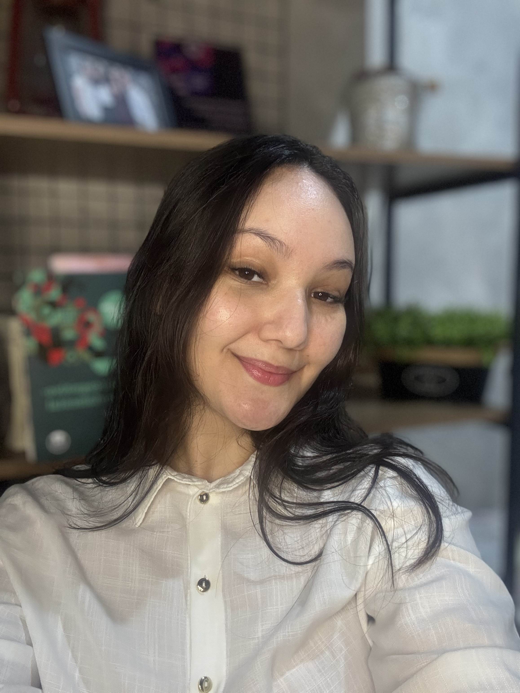
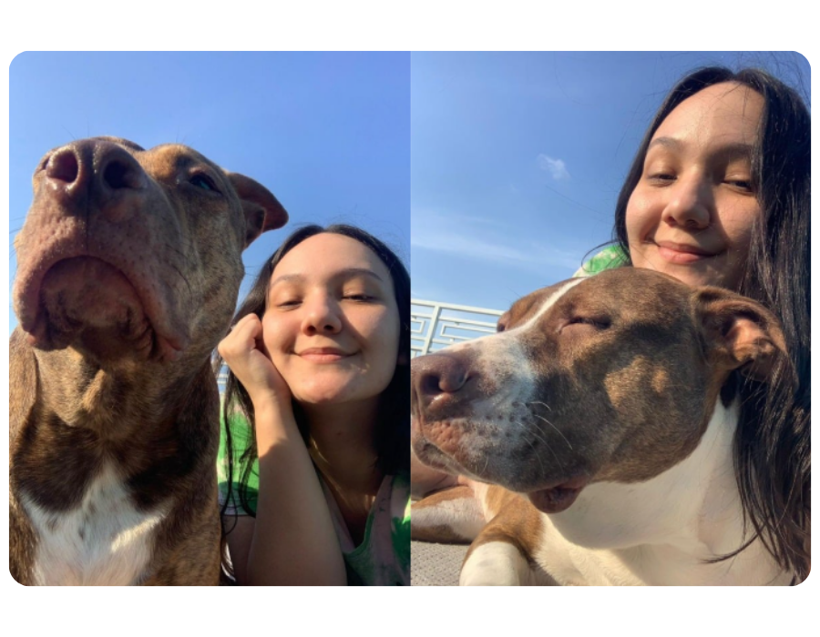
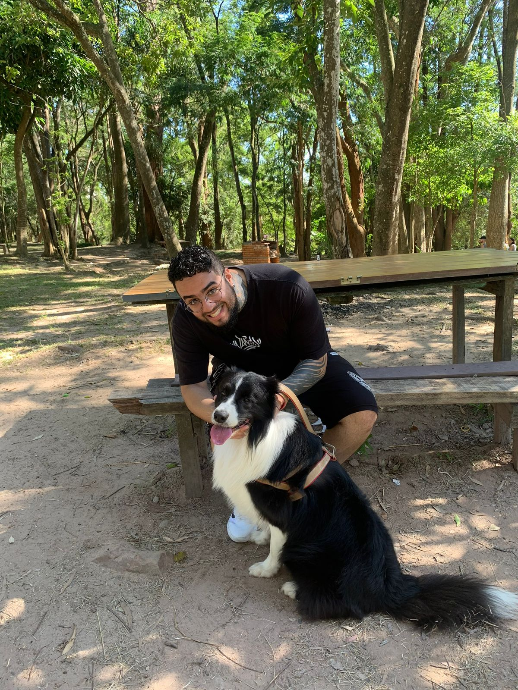
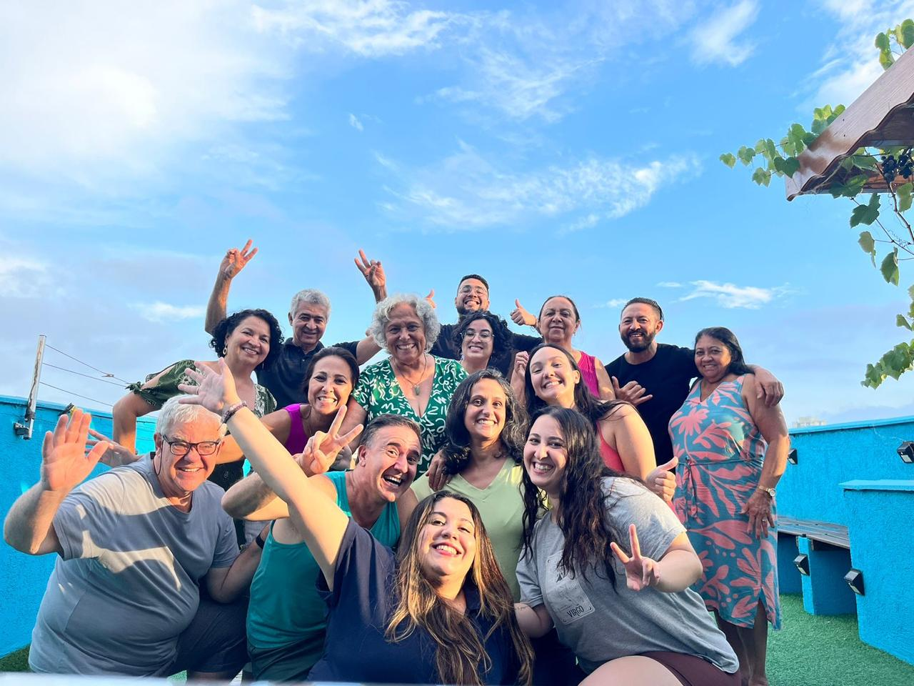

Terapia Cognitivo-Comportamental
Ajudo você a compreender e transformar pensamentos, emoções e comportamentos através da TCC, uma abordagem baseada em evidências científicas.
"A essência da terapia não é dizer às pessoas o que pensar, mas ajudá-las a mudar a forma como pensam." — Aaron Beck
Acreditando no potencial de transformação de cada indivíduo, realizo atendimentos individuais para jovens, adultos e idosos, além de terapia de casal. Juntas, trabalharemos para direcionar suas experiências para uma vida mais autêntica, saudável, resiliente e conectada com seus propósitos.
Sua mente não para, cheia de preocupações e o corpo está sempre tenso? Trabalharemos para acalmar e transformar seus pensamentos e devolver a sensação de presença e tranquilidade.
Se a vida parece nublada e a falta de motivação e cansaço imperam, reestruturaremos pensamentos, hábitos, interesses, resgatando sua satisfação e vitalidade.
Diante do esgotamento profissional ou exaustão mental em geral, trabalharemos para recuperar energia, gerenciar pressões externas, estabelecer limites saudáveis e ter uma rotina sustentável.
Para quem convive com autocrítica severa e inseguranças constantes: juntas, restabeleceremos sua autoconfiança e a percepção do seu próprio valor e capacidades.
Para lidar melhor com as relações que mais te importam. Seja na resolução de conflitos ou dificuldades de comunicação, o objetivo será construir conexões mais leves, seguras e assertivas.
Apoiarei você no processo de autoconhecimento e crescimento pessoal, desenvolvendo estratégias para alcançar as metas que te aproximam do seu caminho de vida desejado.
Atendimento especializado baseado em evidências científicas
Tratamento focado na redução da hipervigilância e na reestruturação de pensamentos catastróficos, utilizando regulação emocional para interromper o ciclo da preocupação crônica.
Intervenção através de Ativação Comportamental e Reestruturação Cognitiva para modificar padrões desadaptativos e restaurar a funcionalidade e o sentido vital.
Protocolos voltados ao treino de habilidades e regulação emocional, visando estabilizar reações intensas, reduzir a impulsividade e fortalecer a identidade.
Foco em psicoeducação e monitoramento de humor para identificação precoce de gatilhos, aliando rotina estruturada à minimização dos impactos das oscilações de fase.
Aplicação de Exposição e Prevenção de Resposta (EPR) para quebrar o vínculo entre obsessões e rituais, ensinando a mente a lidar com a dúvida sem recorrer às compulsões.
Atuação no processamento seguro de memórias invasivas e na ressignificação do evento traumático, devolvendo a sensação de segurança e controle no presente.
Tratamento baseado em evidências científicas para demais diagnósticos e quadros de sofrimento agudo, luto, desenvolvimento de competências (autoconhecimento, habilidades sociais, resolução de conflitos, etc) e afins.




Sou psicóloga clínica e dedico minha trajetória a auxiliar pessoas na jornada de transformação pessoal, rumo a uma vida mais plena, equilibrada e, acima de tudo, alinhada aos seus valores e objetivos reais.
Minha escolha pela Psicologia nasceu do desejo de compreender as nuances da mente humana e, através desse conhecimento, gerar um impacto real na saúde mental e na qualidade de vida de cada indivíduo.
Para mim, o que traz mais sentido à vida são os laços com minha família, meu noivo e meus pets, que são fontes constantes de amor e apoio.
No tempo livre, busco recarregar as energias através das coisas que amo: tocando violão, jogando video-games, praticando atividades físicas ou mergulhando em histórias, seja através de livros, filmes ou minhas séries favoritas.
Escolhi a Terapia Cognitivo-Comportamental por acreditar no seu alto poder transformador, sustentado por evidências científicas sólidas.
A TCC parte do modelo cognitivo - a ideia de que pensamentos influenciam emoções e comportamentos - e oferece um processo terapêutico estruturado, colaborativo e focado no presente. Desenvolvida por Aaron T. Beck, é a forma de psicoterapia mais estudada e validada cientificamente no mundo, considerada o "padrão-ouro" para o tratamento de diversos transtornos mentais.
Trabalho com a TCC e a Terapia dos Esquemas (TE) de forma integrada por entender que elas se complementam profundamente. Enquanto a TCC foca na reestruturação do presente, a TE — também uma terapia cognitiva — nos permite acessar as raízes do funcionamento emocional.
O que mais me motiva é testemunhar meus pacientes conquistando autonomia e transformando sua realidade através das estratégias que construímos em sessão - é o que dá sentido ao meu trabalho.
Agende sua consulta e dê o primeiro passo rumo ao bem-estar emocional
Agendar Consulta pelo WhatsApp